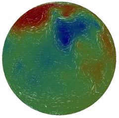

Shallow Fluid Model
- P key Pause/unpause
- Mouse 1 Rotate
- Mouse 2 Zoom
- Up arrow Raise surface
- Down arrow Lower surface
- H key List other controls

On the right is a simple, interactive model of fluid on a rotating planet. In particular, it models gravity and the Coriolis effect on a single fluid layer.
You'll need the Unity Player to run it, which is a ~1MB browser plugin that allows the 3D Unity Engine to run in a browser window. If your browser doesn't automatically prompt you to download it, you can get it here.
As well as raising and lowering areas, check the help menu (H) for extra controls. In particular, the options menu (O) will let you adjust the model's parameters. If everything goes wrong, hit R to reset the fields.
FAQ
- Why has everything gone black??
- Sometimes if you enforce particularly extreme conditions on the simulation, certain fields can take on illegal values (such as a negative height). For now, hit R to reset - dealing with exposed ground properly is on the to-do list.
- Why don't the colours seem to reliably match up to the actual height at a point?
-
- It's adaptive. It keeps a running average of the recent highest values anywhere on the planet, and sets that to red. Similarly, it sets the running average of lowest values to blue.
- My sense of scale is telling me those white particles are going far too fast!
- Even at the 5-10 hours-per-second that the simulation runs at, realistic particles would still move far too slowly to be noticeable. As such, their motion is exaggerated by a factor of 10:1.
- I'm playing with the model parameters but everything goes crazy!
- Your timestep is probably too high. As a rule of thumb, if you halve the size of the simulation's cells (by increasing how many there are or by decreasing the radius of the planet), halve the timestep. This is formally known as the CFL condition.
- Who came up with this?
- While I wrote this particular implementation, the theory behind it was taken from several research papers. Ringler & Randall's 2001 paper supplied the vorticity-momentum formulation of the shallow-water equations that's used, while Heikes & Randall 1995 came up with the geodesic grid.
- Why'd you make it?
- As a learning experience. This is my first non-trivial programming project, and in pursuing it I learnt a lot about C# and about software architecture.
- Where can I find the source?
- In this GitHub repository.
Links